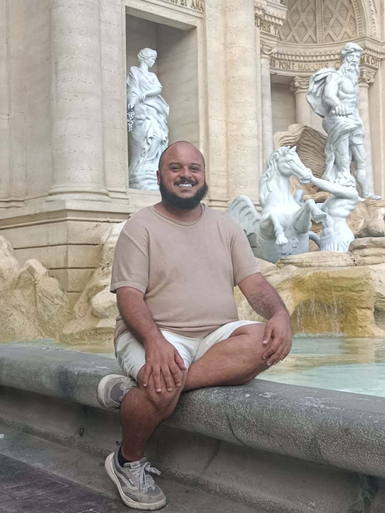

Eu procurei um app que me ajudasse.
Não encontrei. Então construí.
Meu nome é Vinicius Paradi. Sou terapeuta há anos e ajudo pessoas a destravar bloqueios, ansiedade e autossabotagem. Mas tinha uma coisa que eu não conseguia explicar: por que eu mesmo vivia travado. A mente acelerada, os mil começos sem fim, o cansaço que ninguém via.
A resposta veio tarde, como vem pra muita gente: já adulto, fui diagnosticado com TDAH, TAG (transtorno de ansiedade generalizada) e autismo suporte 1. E aí tudo fez sentido, inclusive o motivo de nenhum app de produtividade nunca ter funcionado pra mim. Eles são feitos pra mentes lineares. A minha não é.
O Focoh já está no ar, funcionando, com os primeiros pioneiros usando. Agora falta um passo grande: colocar ele nas lojas de aplicativos (App Store e Google Play), onde ele pode chegar a quem realmente precisa. E é pra isso que estou pedindo sua ajuda.